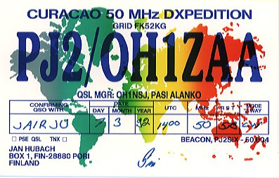
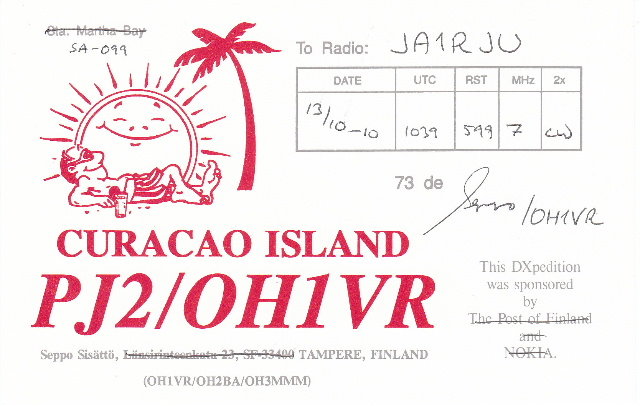
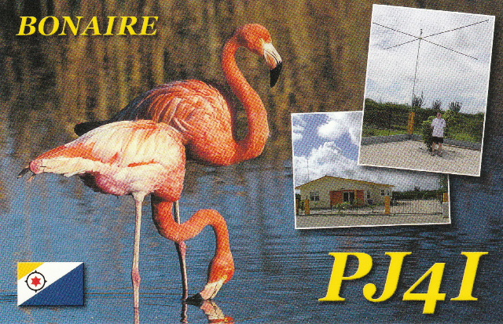

Flash ! DX


|
|
|
|
|
|
|
[Back Issues Jan.2011]
TIME:UTC(JST-09:00)
Report from JA1RJU(PM95sq)
31.Jan.2011(00:00a)
Report from JA1RJU(PM95sq)
30.Jan.2011(00:00a)
Report from JA1RJU(PM95sq)
29.Jan.2011(00:00a)
Report from JA1RJU(PM95sq)
28.Jan.2011(00:00a)
Report from JA1RJU(PM95sq)
27.Jan.2011(00:00a)
Report from JA1RJU(PM95sq)
26.Jan.2011(00:00a)
Report from JA1RJU(PM95sq)
25.Jan.2011(00:00a)
Report from JA1RJU(PM95sq)
24.Jan.2011(00:00a)
Report from JA1RJU(PM95sq)
23.Jan.2011(00:00a)
Report from JA1RJU(PM95sq)
22.Jan.2011(15:00c)
Report from JA1RJU(PM95sq)
21.Jan.2011(15:00c)
Report from JA1RJU(PM95sq)
20.Jan.2011(15:00c)
Report from JA1RJU(PM95sq)
19.Jan.2011(15:00c)
Report from JA1RJU(PM95sq)
18.Jan.2011(15:00c)
Report from JA1RJU(PM95sq)
17.Jan.2011(15:00c)
Report from JA1RJU(PM95sq)
16.Jan.2011(15:00c)
Report from JA1RJU(PM95sq)
15.Jan.2011(15:00c)
Report from JA1RJU(PM95sq)
14.Jan.2011(15:00c)
Report from JA1RJU(PM95sq)
13.Jan.2011(15:00c)
ZL-TV 02:30- 45.240/260 -- ZL video S5 QSB
ZL-TV 03:40- 45.250 -- ZL video S9 QSB
Report from JA1RJU(PM95sq)
12.Jan.2011(15:00c)
ZL-TV 03:20- 45.24/25/26 -- ZL video
ZL1RS 03:30 50.0985 CW @ 1st ZL Open in 2011
ZL1RS 03:50 50.0985 CW CQ CQ RST 599
VK-TV 03:50 46.172/240 -- VK video
Report from JA1RJU(PM95sq)
11.Jan.2011(15:00c)
??-TV 01:30- 48.250 -- TV video ?
JAでは新年になっても相変わらず静かな50MHz帯だが、今朝はZL/VKと北米間ではFBなオープンがリポートされている。
リポートによると、2336z(08:36JST)のZL1RSとK6QXYのQSOを皮切りに、ZL1RS-N5JEH、K9HMB、W0OGH、N7CWなど北米の中・西部とのオープンが続いた。その後このコンデションはVK4、VK3、VK2などオーストラリアの東・南部まで広がりVK3OTなども北米中部とQSOしている。
コンデションはXE2D-ZL2TPYが01:41zにQSOした後、01:54zのK6FV/Bの受信で一旦落ちた模様だが、その後04:00z頃からハワイのKH7YがW5、6、7などの北米西海岸と約50局QSOしている。一連の太平洋を挟んだ今日の北米とVK/ZLのオープンは、距離的にはZL-JAとあまり変わらないが、太平洋越えのパスが活発になってきたのは注目される。
なおVK/ZL～Wがオープンしていた01:30z(10:30JST)頃に、150度方向から48.250MHzでTVのVideo信号がS6-7程度で入感していた。
まだこの時期のロングパスによるEUの入感の可能性はないが、徐々にSSNも上がってきているので、この春には朝方の南米方面の入感も"要注意"かも知れない？。
Report from JA1RJU(PM95sq)
10.Jan.2011(15:00c)
Report from JA1RJU(PM95sq)
09.Jan.2011(15:00c)
Report from JA1RJU(PM95sq)
08.Jan.2011(15:00c)
VK-TV 04:50- 46.240 -- VK video
Report from JA1RJU(PM95sq)
07.Jan.2011(15:00c)
Report from JA1RJU(PM95sq)
06.Jan.2011(15:00c)
Report from JA1RJU(PM95sq)
05.Jan.2011(15:00c)
Report from JA1RJU(PM95sq)
04.Jan.2011(15:00c)
Report from JA1RJU(PM95sq)
03.Jan.2011(15:00c)
◎ NEW YEAR PARTY (～2100JST)
Report from JA1RJU(PM95sq)
02.Jan.2011(15:00c)
◎ NEW YEAR PARTY (0900JST～)
Report from JA1RJU(PM95sq)
01.Jan.2011(15:00c)
謹賀新年
|
 DXCCから消滅扱いとなったNetherlands Antilles
従来のエンティティーの「PJ2/9=Curacao」は消滅となり、新たに「PJ2-PJ4-PJ5/6-PJ7/8」の4エンティティーが誕生した。1982年のPJ9EEや1992年のPJ2/OH1ZAAなど、当時JAからQSO出来たPJ (Netherlands Antilles)は消滅扱いとなった。 ただし、6mのDXCCでは消滅エンティティーもDXCCにはカウントする事になっているので、総QSOから減る事はない。 このサイクル24のコンデションでロングパスのカリブ海の伝搬が期待できるかどうか不明だが、もしもオープンする事があったら、PJ2(Curacao)、PJ4(Bonaire)、PJ5/6(Eustatius/Saba)、PJ7/8(St.Maarten)の4エンティテイーの"NEW"を探そう！？。 |

